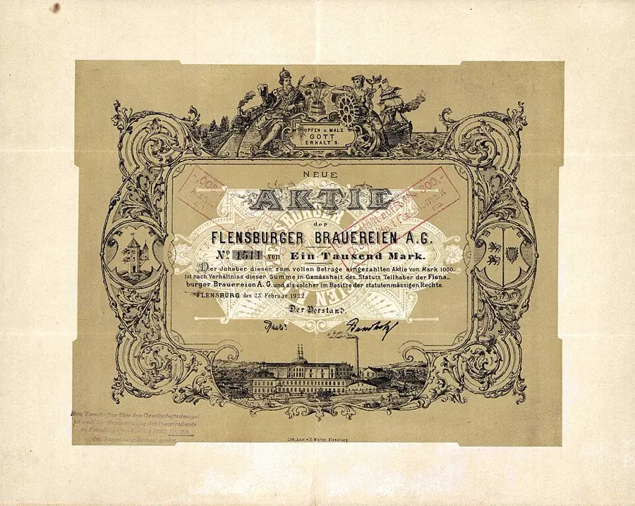
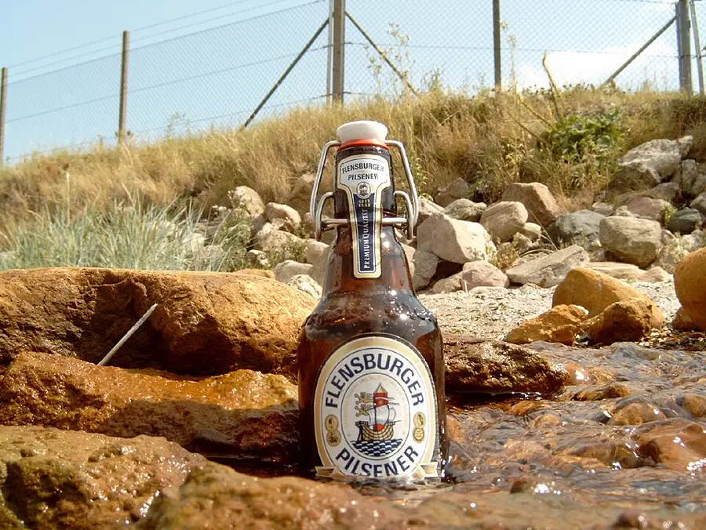

대표 로고대표 브랜드 마크
대표 로고대표 브랜드 마크Flensburger Brauerei
Flensburger Brauerei는 독일 Schleswig-Holstein주의 플렌스부르크에 있는 양조장이다. 1888년에 설립되었으며, 더 큰 양조 그룹에 속하지 않은 채 전국에서 운영되는 마지막 양조장 중 하나이다.
최종 업데이트
Flensburger Brauerei는 어떤 브랜드인가
이 양조장은 독일 Schleswig-Holstein주의 플렌스부르크에 있으며 맥주와 비알코올 음료, 광천수 등을 생산한다. 1888년 9월 6일 플렌스부르크 시민 다섯 명이 설립했으며, 지금도 창립자 가문인 Petersen과 Dethleffsen이 주로 지분을 보유하고 있다.
대형 양조 그룹에 속하지 않은 채 전국에서 운영되는 마지막 양조장 중 하나이다. 모든 제품을 전통적인 플립탑(스윙탑) 마개가 달린 유리병에 담아 판매한다.
1980년대 Rötger Feldmann의 'Werner' 만화로 독일 전역에 알려졌고, 북독일 기질을 내세운 마케팅 이후 이 지역의 자기 정체성을 나타내는 상징이 되었다. 현지에서는 이 회사의 맥주를 주문할 때 흔히 'Flens'라고 부른다.
Flensburger Brauerei는 어떻게 시작되고 성장했나
이 양조장은 1888년 9월 6일 플렌스부르크 시민 다섯 명이 세웠다. 냉장 기술이 없던 시절에는 겨울에 얼어붙은 호수에서 얼음 덩어리를 잘라 양조장으로 가져와 여름 동안 지하 저장 시설을 차갑게 유지했다.
지금도 자체 우물을 운영하며, 물은 스칸디나비아에서 온 매우 오래된 빙하기 융해수의 지하 수맥에서 공급된다. 원래 Schleswig-Holstein 중심으로 유통되던 지역 맥주였으나, 1980년대 Rötger Feldmann의 'Werner' 만화를 통해 독일 전역에서 인기를 얻었다.
Flensburger Brauerei의 브랜드 아이덴티티는 무엇인가
병을 열 때 나는 'plopp' 소리가 기업 정체성의 일부이며, 북독일 기질을 앞세운 마케팅으로 지역의 자기 정체성을 상징하게 된 독립 양조장이다.
Flensburger Brauerei의 대표 제품과 서비스는 무엇인가
대표 제품은 Flensburger Pilsener, Gold, Dunkel, Weizen, Kellerbier 등의 맥주이며, Weizen은 알코올 도수 5.1%이고 나머지는 4.8%이다. 계절 제품으로 Winterbock(7.0%)과 Frühlingsbock(6.9%)이 있고, 125주년 기념 양조로 내놓은 Edles Helles도 있다.
비알코올 제품으로는 Flensburger Frei와 Flensburger Malz가 있다. 도수 2.4%의 Radler와 Biermix 'Lemongrass', 'Blutorange-Grapefruit'도 판매한다.
광천수 Flensburger Wasser와 청량음료 Flensburger Fassbrause도 제품군에 들어 있다.
Flensburger Brauerei는 지금 어떤 상태인가
현재도 창립자 가문인 Petersen과 Dethleffsen이 회사 지분의 대부분을 보유하며, 더 큰 양조 그룹에 속하지 않은 독립 양조장으로 남아 있다. 2008년 기준 직원은 약 120명이며, 기술적으로 앞선 고도 자동화 생산 공정을 운영하는 것으로 알려져 있다.
양조장이 캠퍼스 옆에 있어 매년 플렌스부르크 공정공학 전공 학생들이 방문하는 것이 전통 행사가 되었다.
Flensburger Brauerei 로고는 어떻게 변해왔나
대표 로고대표 브랜드 마크사진으로 보는 Flensburger Brauerei의 역사


자주 묻는 질문
Flensburger Brauerei는 어느 나라 브랜드인가요?
Flensburger Brauerei는 독일의 식음료 브랜드입니다.
Flensburger Brauerei는 언제 설립되었나요?
Flensburger Brauerei는 1888년 설립되었습니다.
Flensburger Brauerei의 브랜드 아이덴티티는 무엇인가요?
병을 열 때 나는 'plopp' 소리가 기업 정체성의 일부이며, 북독일 기질을 앞세운 마케팅으로 지역의 자기 정체성을 상징하게 된 독립 양조장이다.
Flensburger Brauerei의 대표 제품은 무엇인가요?
대표 제품은 Flensburger Pilsener, Gold, Dunkel, Weizen, Kellerbier 등의 맥주이며, Weizen은 알코올 도수 5.1%이고 나머지는 4.8%이다.
Flensburger Brauerei는 현재 어떤 상태인가요?
현재도 창립자 가문인 Petersen과 Dethleffsen이 회사 지분의 대부분을 보유하며, 더 큰 양조 그룹에 속하지 않은 독립 양조장으로 남아 있다.
Flensburger Brauerei의 본사는 어디에 있나요?
Flensburger Brauerei의 본사는 플렌스부르크에 있습니다(위키데이터 기준).
Flensburger Brauerei의 공식 웹사이트는 어디인가요?
Flensburger Brauerei의 공식 웹사이트는 http://www.flens.de 입니다.
출처와 검증
Flensburger Brauerei 관련 참고: 공식 웹사이트 · 위키데이터 Q682660 · 영어 위키백과. 브랜드명은 한글과 원어를 함께 표기하되 데이터에 없는 표기는 만들지 않습니다. 기원 국가·설립연도는 검수된 정의문에서 확인된 값을 우선하고, 없을 때만 공식 웹사이트 URL이 일치하는 위키데이터 개체의 값을 씁니다. 탄생일의 월·일은 위키데이터, 위키백과 정보상자, 본문 가운데 같은 연월로 확인되는 값만 싣고, 출처끼리 다르면 싣지 않습니다. 위키데이터 값은 2026-11-08 기준입니다.